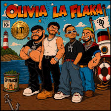

Nombre: Iker Husaid Vigueras Arriaga
Los corridos tumbados son un género musical que combina los corridos tradicionales con sonidos modernos como el trap y el hip hop.

| Artista | Estilo | Popularidad |
|---|---|---|
| Natanael Cano | Corridos tumbados | Alta |
| Junior H | Corridos tumbados | Alta |
| Peso Pluma | Regional urbano | Muy alta |
| Fuerza Regida | Regional urbano | Alta |
Puedes escuchar música en:
YouTube